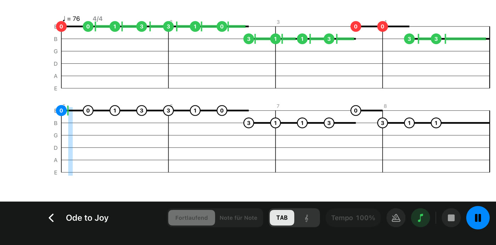
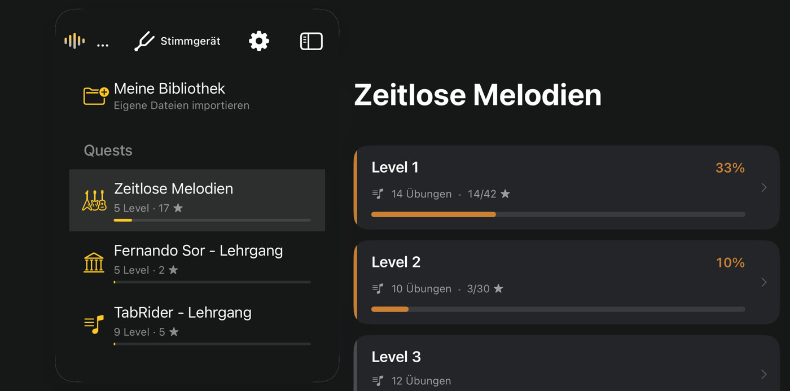
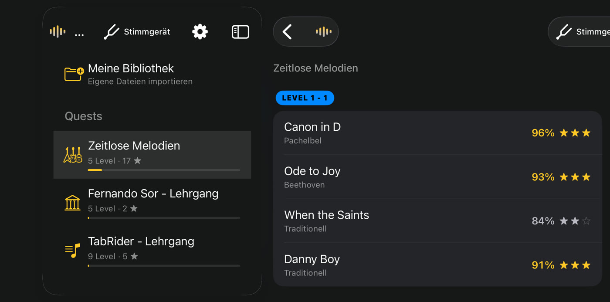
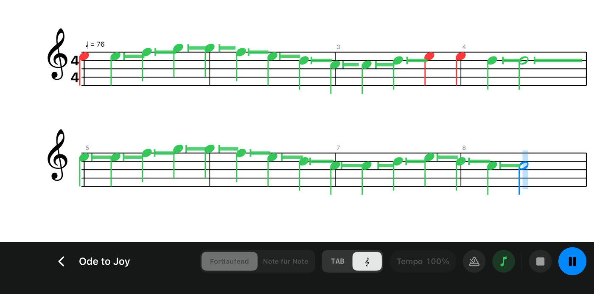
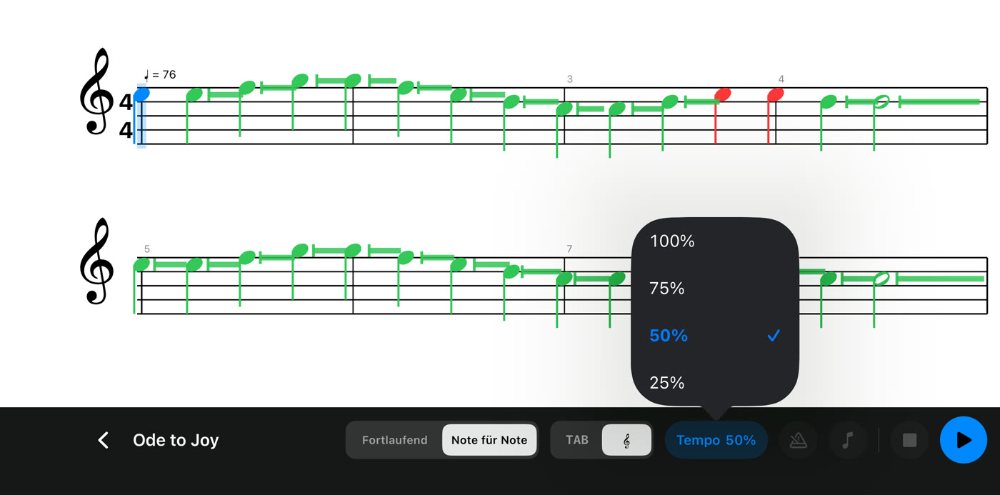
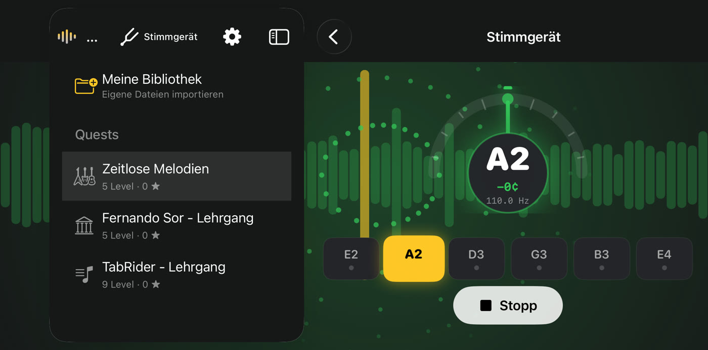

TabRider
TabRiderSpiel los.
TabRider hört zu.
Nimm deine Gitarre und spiel. TabRider hört jede Note über dein Smartphone oder Tablet, folgt mit dir den Noten und schaltet neue Musik frei, während du besser wirst.

 Demnächst
Demnächst

So funktioniert’s

SCHRITT 1
Wähle ein Stück
361 Übungen in drei Quests: zeitlose Melodien wie Für Elise, Greensleeves und Danny Boy, die klassischen Etüden von Fernando Sor und ein Lehrgang Schritt für Schritt mit Tonleitern, Akkorden, Arpeggien, Fingerpicking, Rhythmus und Lead.
SCHRITT 2
Spiel ins Mikrofon
Kein Kabel, keine Einrichtung. Spiel deine Akustik- oder Konzertgitarre in der Nähe deines Smartphones oder Tablets. Die Noten laufen mit, und jede Note wird grün, sobald TabRider sie hört.

SCHRITT 3
Sterne sammeln, weiterkommen
Jeder Durchgang wird nach richtiger Note, Timing und Haltedauer bewertet. Sterne schalten die nächste Reihe von Stücken frei – so gibt es immer etwas Neues zu spielen.
Alles, was du zum Üben brauchst

Tabulatur oder Notenschrift
Lies Tabulatur oder Noten und wechsle jederzeit.

Langsamer spielen
Im Übungsmodus wird nichts bewertet. Senke das Tempo auf bis zu 25 % oder lass dich im Modus Note für Note bei jeder Note abwarten.

Ein eingebautes Stimmgerät
Stimme jede Saite in Sekunden, bevor du spielst.
- Deine eigene Musik. Importiere Guitar-Pro-6-Dateien (.gpx) in Meine Bibliothek.
- Metronom. Ein Einzähler und ein gleichmäßiger Klick halten dich im Takt.
- Privat. Der Klang wird auf deinem Gerät analysiert, nie aufgenommen oder gesendet.
- Kostenlos. Kein Konto, keine Werbung, keine In-App-Käufe, und es funktioniert offline.
Deine Gitarre. Dein Tempo.
Für iPhone und iPad (ab iOS 17) und Android (ab 8.0).
Demnächst